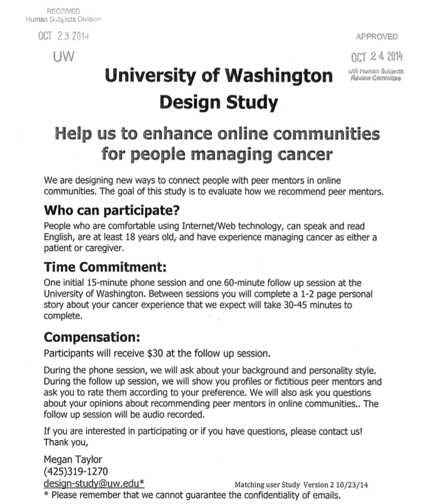

Peermentor is a University of Washington HCI research team that examines how cancer patients find and choose mentors in online communities. The Peermentor research team seeks to identify mentorship characteristics of community members, create matching tools to connect patients to mentors, and assess the value of matching for peer mentorship. I provide user research and web development services for the team. Under the guidance of UW faculty Wanda Pratt and David McDonald I was able to learn valuable user research, design, and development techniques.
To prepare for user studies, I completed human subjects training , a series of courses that covered topics of user research such as informed consent and information ethics. This got me acquanted with how the Institutional Review Board works, which is essentially the governing body of university research projects.
I was involved with the design and creation of the study material. Design considerations were mocked up in Axure, which were critiqued and picked for portions of our research study. These designs can be seen here.
Storyboards were created to help participants understand common scenarios of our study better. Below is an excerpt from our team's storyboard.
To recruit for the study, I reached out to local cancer groups, posting flyers and meeting with the support group directors to attract attention to the study. This proved to be one of the greater challenges of the project, as finding participants required an extensive amount of phone calls and scheduled meetings. 
Patients that agreed to participate took part in a one hour long study, where they were presented a series of sample online profiles to rank based upon the likelihood of contacting. A series of open-ended questions were asked afterwards which revealed their thought process behind the selections.
Each Interview Session Consisted of:
Before I began working with the Peermentor team, data had to be manually gathered from the database - a task that could take hours. As a side project I connected this data to a website so our team could pull the information more effectively, saving us all a lot of time. With limited backend coding experience, I implemented a web application that pulls data from a database and displays similarly to our design mockups. A sample of the website (with a de-identified database) can be seen here.
Although the study is still in progress, several recurring sentiments have already been observed. Cancer patients and caregivers alike seem to place importance on “give and take” mentor/mentee relationships and time efficient interactions. Demographics, diagnosis and sample posts have also been favored when assessing the potential of a mentoring relationship. Moving forward, we will conduct an in depth analysis of user data both qualitatively and quantitatively. The insights that we acquire through this study will inform design recommendations that align the functionality of online health communities with user needs and values. I will be taking part in UW's Undergraduate Research Symposium to present results our team has gathered.